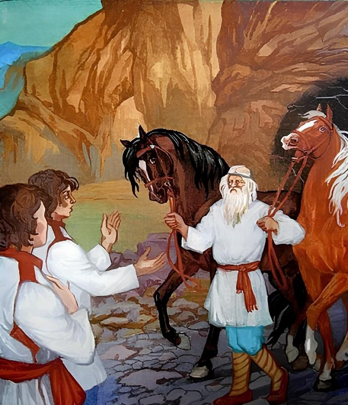

Два Ивана солдатских сына

В некотором царстве, в некотором государстве жил-был мужик. Пришло время — записали его в солдаты. Оставляет он жену, стал с нею прощаться и говорит:
—Смотри, жена, живи хорошенько, добрых людей не смеши, домишка не разори, хозяйничай да меня жди; авось назад приду. Вот тебе пятьдесят рублей. Дочку ли, сына ли родишь — все равно сбереги деньги до возрасту: станешь дочь выдавать замуж — будет у нее приданое, а коли бог сына даст, да войдет он в большие года — будет и ему в тех деньгах подспорье немалое. Попрощался с женою и пошел в поход. Месяца три погодя родила жена двух близнецов-мальчиков и назвала их Иванами — солдатскими сыновьями.
Пошли мальчики в рост, как пшеничное тесто на опаре, так кверху и тянутся. Стукнуло ребяткам десять лет, отдала их мать в науку; скоро они научились грамоте и боярских и купеческих детей за пояс заткнули — никто лучше их не сумеет ни прочитать, ни написать, ни ответу дать.
Боярские и купеческие дети позавидовали и давай тех близнецов каждый день поколачивать да пощипывать.
Говорит один брат другому:
—Долго ли нас колотить да щипать будут Матушка и то на нас платьица не нашьется, шапочек не накупится, что ни наденем, всё товарищи в клочки изорвут! Давай-ка расправляться с ними по-своему.
И согласились они друг за друга стоять, друг друга не выдавать. На другой день стали боярские и купеческие дети задирать их, а они — полно терпеть! — как пошли сдачу давать. Всем досталось! Тотчас прибежали караульные, связали их, добрых молодцев, и посадили в острог.
Дошло то дело до самого царя; он призвал тех мальчиков к себе, расспросил про все и велел их выпустить.
—Они, — говорит, — не виноваты: не зачинщики!
Выросли два Ивана — солдатские дети и просят у матери:
—Матушка, не осталось ли от нашего родителя каких денег. Коли остались, дай нам: мы пойдем в город на ярмарку, купим себе по доброму коню.
Мать дала им пятьдесят рублей — по двадцати пяти на брата — и приказывает:
—Слушайте, детушки! Как пойдете в город, отдавайте поклон всякому встречному и поперечному.
—Хорошо, родимая!
Вот, отправились братья в город, пришли на конную, смотрят — лошадей много, а выбрать не из чего, все не под стать им, добрым молодцам!
Говорит один брат другому:
—Пойдем на другой конец площади; глядь, что народу там толпится — видимо-невидимо!
Пришли туда, протолкались вперед — у дубовых столбов стоят два жеребца, на железных цепях прикованы: один на шести, другой на двенадцати; рвутся кони с цепей, удила кусают, роют землю копытами. Никто подойти к ним близко не смеет.
—Что твоим жеребцам цена будет? — спрашивает Иван — солдатский сын у хозяина.
—Не с твоим, брат, носом соваться сюда! Есть товар, да не по тебе, нечего и спрашивать.
—Почем знать, чего не ведаешь; может, и купим, надо только в зубы посмотреть.
Хозяин усмехнулся:
—Смотри, коли головы не жаль!
Тотчас один брат подошел к тому жеребцу, что на шести цепях был прикован, а другой брат — к тому, что на двенадцати цепях держался. Стали было в зубы смотреть — куда! Жеребцы поднялись на дыбы, так и храпят...
Братья ударили их коленками в грудь — цепи разлетелись, жеребцы на пять сажен отскочили, на землю попадали.
—Вот чем хвастался! Да мы этих клячей и даром не возьмем.
Народ ахает, дивуется: что за сильные богатыри появились! Хозяин чуть не плачет: жеребцы его поскакали за город и давай разгуливать по всему чистому полю; приступить к ним никто не решается, как поймать, никто не придумает.
Сжалились над хозяином Иваны — солдатские дети, вышли в чистое поле, крикнули громким голосом, молодецким посвистом — жеребцы прибежали и стали на месте словно вкопанные; тут надели на них добрые молодцы цепи железные, привели их к столбам дубовым и приковали крепко-накрепко. Справили это дело и пошли домой.
Идут путем-дорогою, а навстречу им седой старичок; позабыли они, что мать наказывала, и прошли мимо, не поклонились, да уж после один спохватился:
—Ах, братец, что ж это мы наделали, старичку поклона не отдали; давай нагоним его да поклонимся.
Нагнали старика, сняли шапочки, кланяются в пояс и говорят:
—Прости нас, дедушка, что прошли не поздоровались. Нам матушка строго наказывала: кто б на пути ни встретился, всякому честь отдавать.
—Спасибо, добрые молодцы! Куда ходили?
—В город на ярмарку, хотели купить себе по доброму коню, да таких нет, чтоб нам пригодились.
—Как же быть? Надо подарить вам по лошадке.
—Ах, дедушка, если подаришь, станем тебя вечно благодарить!
—Ну, пойдемте!
Привел их старик к большой горе, отворяет чугунную дверь и выводит богатырских коней:
—Вот вам и кони, добрые молодцы! Ступайте с богом, владейте на здоровье!
Они поблагодарили, сели верхом и поскакали домой.
Приехали на двор, привязали коней к столбу и вошли в избу. Начала мать спрашивать:
—Что, детушки, купили себе по лошадке?
—Купить не купили, даром получили.
—Куда же вы их дели?
—Возле избы поставили.
—Ах, детушки, смотрите — не увел бы кто!
—Нет, матушка, не таковские кони: не то, что увести — и подойти к ним нельзя!
Мать вышла, посмотрела на богатырских коней и залилась слезами:
—Ну, сынки, верно, вы не кормильцы мне.
На другой день просятся сыновья у матери:
—Отпусти нас в город, купим себе по сабельке.
—Ступайте, родимые!
Они собрались, пошли на кузницу; приходят к мастеру.
—Сделай, — говорят, — нам по сабельке.
—Зачем делать! Есть готовые, сколько угодно берите!
—Нет, брат, нам такие сабли надобны, чтоб по триста пудов весили.
—Эх, что выдумали! Да кто ж этакую махину ворочать будет? Да и горна такого во всем свете не найдешь!
Нечего делать — пошли добрые молодцы домой и головы повесили.
Идут путем-дорогою, а навстречу им опять тот же старичок попадается.
—Здравствуйте, младые юноши!
—Здравствуй, дедушка!
—Куда ходили?
—В город, на кузницу, хотели купить себе по сабельке, да таких нет, чтоб нам по руке пришлись.
—Плохо дело! Нешто подарить вам по сабельке?
—Ах, дедушка, коли подаришь, станем тебя вечно благодарить!
Старичок привел их к большой горе, отворил чугунную дверь и вынес две богатырские сабли. Они взяли сабли, поблагодарили старика, и радостно, весело у них на душе стало!
Приходят домой, мать спрашивает:
—Что, детушки, купили себе по сабельке?
—Купить не купили, даром получили.
—Куда же вы их дели?
—Возле избы поставили.
—Смотрите, как бы кто не унес!
—Нет, матушка, не то что унесть, даже увезти нельзя.
Мать вышла на двор, глянула — две сабли тяжелые, богатырские к стене приставлены, едва избушка держится! Залилась слезами и говорит:
—Ну, сынки, верно, вы не кормильцы мне.
Наутро Иваны — солдатские дети оседлали своих добрых коней, взяли свои сабли богатырские, приходят в избу, с родной матерью прощаются:
—Благослови нас, матушка, в путь-дорогу дальнюю.
—Будь над вами, детушки, мое нерушимое родительское благословение! Поезжайте с богом, себя покажите, людей посмотрите; напрасно никого не обижайте, а злым ворогам не уступайте.
—Не бойся, матушка! У нас такова поговорка есть: еду — не свищу, а наеду — не спущу!
Сели добрые молодцы на коней и поехали.
Близко ли, далеко, долго ли, коротко — скоро сказка сказывается, не скоро дело делается — приезжают они на распутье, и стоят там два столба. На одном столбу написано: «Кто вправо поедет, тот царевичем будет»; на другом столбу написано: «Кто влево поедет, тот убит будет».
Остановились братья, прочитали надписи и призадумались: куда кому ехать Коли обоим по правой дороге пуститься — не честь, не хвала богатырской их силе, молодецкой удали; ехать одному влево — никому помереть не хочется!
Да делать-то нечего — говорит один из братьев другому:
—Ну, братец, я посильнее тебя; давай я поеду влево да посмотрю, от чего может мне смерть приключиться. А ты поезжай направо: авось бог даст — царем сделаешься!
Стали они прощаться, дали друг дружке по платочку и положили такой завет: ехать каждому своею дорогою, по дороге столбы ставить, на тех столбах про себя писать для знатья, для ведома; всякое утро утирать лицо братниным платком: если на платке кровь окажется — значит, брату смерть приключилася; при такой беде ехать мертвого разыскивать.
Разъехались добрые молодцы в разные стороны.
Кто вправо коня пустил, тот добрался до славного царства. В этом царстве жил царь с царицею, у них была дочь царевна Настасья Прекрасная.
Увидал царь Ивана — солдатского сына, полюбил его за удаль богатырскую и, долго не думая, отдал за него свою дочь в супружество, назвал его Иваном-царевичем и велел ему управлять всем царством.
Живет Иван-царевич в радости, своей женою любуется, в царстве порядок ведет да звериной охотой тешится.
В некое время стал он на охоту сбираться, на коня сбрую накладывать и нашел в седле — два пузырька с целящей и живой водою зашито; посмотрел на те пузырьки и положил опять в седло. «Надо, — думает, — поберечь до поры до времени; не ровен час — понадобятся».
А брат его Иван — солдатский сын, что левой дорогой поехал, день и ночь скакал без устали.
Прошел месяц, и другой, и третий, и прибыл он в незнакомое государство — прямо в столичный город.
В том государстве печаль великая: дома черным сукном покрыты, люди словно сонные шатаются.
Нанял он себе самую худую квартиру у бедной старушки и начал ее выспрашивать:
—Расскажи, бабушка, отчего так в вашем государстве весь народ припечалился и все дома черным сукном завешены?
—Ах, добрый молодец! Великое горе нас обуяло: каждый день выходит из синего моря, из-за серого камня, двенадцатиглавый змей и поедает по человеку за единый раз, теперь дошла очередь до царя... Есть у него три прекрасные царевны; вот только сейчас повезли старшую на взморье — змею на съедение.
Иван — солдатский сын сел на коня и поскакал к синему морю, к серому камню; на берегу стоит прекрасная царевна — на железной цепи прикована.
Увидала она витязя и говорит ему:
—Уходи отсюда, добрый молодец! Скоро придет сюда двенадцатиглавый змей; я пропаду, да и тебе не миновать смерти: съест тебя лютый змей!
—Не бойся, красная девица, авось подавится.
Подошел к ней Иван — солдатский сын, ухватил цепь богатырской рукою и разорвал на мелкие части, словно гнилую бечевку; после прилег красной девице на колени.
—Я посплю, а ты на море смотри: как только туча взойдет, ветер зашумит, море всколыхается — тотчас разбуди меня, молодца.
Красная девица послушалась, стала на море смотреть.
Вдруг туча надвинулась, ветер зашумел, море всколыхалося — из синя моря змей выходит, в гору подымается.
Царевна разбудила Ивана — солдатского сына; он встал, только на коня вскочил, а уж змей летит:
—Ты, Иванушка, зачем пожаловал? Ведь здесь мое место! Прощайся теперь с белым светом да полезай поскорее сам в мою глотку — тебе ж легче будет!
—Врешь, проклятый змей! Не проглотишь — подавишься! — ответил Иван, обнажил свою острую саблю, размахнулся, ударил и срубил у змея все двенадцать голов; поднял серый камень, головы положил под камень, туловище в море бросил, а сам воротился домой к старухе, наелся-напился, лег спать и проспал трое суток.
В то время призвал царь водовоза.
—Ступай, — говорит, — на взморье, собери хоть царевнины косточки.
Водовоз приехал к синему морю, видит — царевна жива, ни в чем невредима, посадил ее на телегу и повез в густой, дремучий лес; завез в лес и давай нож точить.
—Что ты делать собираешься? — спрашивает царевна.
—Я нож точу, тебя резать хочу!
Царевна заплакала:
—Не режь меня, я тебе никакого худа не сделала.
—Скажи отцу, что я тебя от змея избавил, так помилую!
Нечего делать — согласилась. Приехала во дворец; царь обрадовался и пожаловал того водовоза полковником.
Вот как проснулся Иван — солдатский сын, позвал старуху, дает ей денег и просит:
—Поди-ка, бабушка, на рынок, закупи, что надобно, да послушай, что промеж людьми говорится: нет ли чего нового?
Старуха сбегала на рынок, закупила разных припасов, послушала людских вестей, воротилась назад и сказывает:
—Идет в народе такая молва: был-де у нашего царя большой обед, сидели за столом королевичи и посланники, бояре и люди именитые; в те поры прилетела в окно каленая стрела и упала посеред зала, в той стреле было письмо привязано от другого змея двенадцатиглавого. Пишет змей: коли не вышлешь ко мне среднюю царевну, я твое царство огнем сожгу, пеплом развею. Нынче же повезут ее, бедную, к синему морю, к серому камню.
Иван — солдатский сын сейчас оседлал своего доброго коня, сел и поскакал на взморье. Говорит ему царевна:
—Ты зачем, добрый молодец? Пущай моя очередь смерть принимать, горячую кровь проливать; а тебе за что пропадать.
—Не бойся, красная девица!
Только успел сказать, летит на него лютый змей, огнем палит, смертью грозит.
Богатырь ударил его острой саблею и отсек все двенадцать голов; головы положил под камень, туловище в море кинул, а сам домой вернулся, наелся-напился и опять залег спать на три дня, на три ночи.
Приехал опять водовоз, увидал, что царевна жива, посадил ее на телегу, повез в дремучий лес и принялся нож точить. Спрашивает царевна:
—Зачем ты нож точишь?
—А я нож точу, тебя резать хочу. Присягни на том, что скажешь отцу, как мне надобно, так я тебя помилую.
Царевна дала ему клятву, он привез ее во дворец; царь возрадовался и пожаловал водовоза генеральским чином.
Иван — солдатский сын пробудился от сна на четвертые сутки и велел старухе на рынок пойти да вестей послушать.
Старуха сбегала на рынок, воротилась назад и сказывает:
—Третий змей появился, прислал царю письмо, а в письме требует: вывози-де меньшую царевну на съедение.
Иван — солдатский сын оседлал своего доброго коня, сел и поскакал к синему морю.
На берегу стоит прекрасная царевна, на железной цепи к камню прикована. Богатырь ухватил цепь, тряхнул и разорвал, словно гнилую бечевку; после прилег красной девице на колени:
—Я посплю, а ты на море смотри: как только туча взойдет, ветер зашумит, море всколыхается — тотчас разбуди меня, молодца.
Царевна начала на море глядеть...
Вдруг туча надвинулась, ветер зашумел, море всколыхалося — из синя моря змей выходит, в гору подымается.
Стала царевна будить Ивана — солдатского сына, толкала, толкала — нет, не просыпается; заплакала она слезно, и капнула горячая слеза ему на щеку; от того богатырь проснулся, подбежал к своему коню, а добрый конь уж на пол-аршина под собой земли выбил копытами.
Летит двенадцатиглавый змей, огнем так и пышет; взглянул на богатыря и вскрикнул:
—Хорош ты, пригож ты, добрый молодец, да не быть тебе живому, съем тебя, и с косточками!
—Врешь, проклятый змей, подавишься.
Начали они биться смертным боем; Иван — солдатский сын так быстро и сильно махал своей саблею, что она докрасна раскалилась, нельзя в руках держать! Взмолился он царевне:
—Спасай меня, красна девица! Сними с себя дорогой платочек, намочи в синем море и дай обернуть саблю.
Царевна тотчас намочила свой платочек и подала доброму молодцу. Он обернул саблю и давай рубить змея; срубил ему все двенадцать голов, головы те под камень положил, туловище в море бросил, а сам домой поскакал, наелся-напился и залег спать на трои сутки.
Царь посылает опять водовоза на взморье. Приехал водовоз, взял царевну и повез в дремучий лес; вынул нож и стал точить.
—Что ты делаешь? — спрашивает царевна.
—Нож точу, тебя резать хочу! Скажи отцу, что я змея победил, так помилую.
Устрашил красную девицу, поклялась говорить по его словам.
А меньшая дочь была у царя любимая; как увидел ее живою, ни в чем невредимою, он пуще прежнего возрадовался и захотел водовоза жаловать — выдавать за него замуж меньшую царевну.
Пошел про то слух по всему государству. Узнал Иван — солдатский сын, что у царя свадьба затевается, и пошел прямо во дворец, а там пир идет, гости пьют и едят, всякими играми забавляются.
Меньшая царевна глянула на Ивана — солдатского сына, увидала на его сабле свой дорогой платочек, выскочила из-за стола, взяла его за руку и говорит отцу:
—Государь-батюшка! Вот кто избавил нас от змея лютого, от смерти напрасной; а водовоз только знал нож точить да приговаривать: я-де нож точу, тебя резать хочу!
Царь разгневался, тут же приказал водовоза повесить, а царевну выдал замуж за Ивана — солдатского сына, и было у них веселье великое. Стали молодые жить-поживать да добра наживать.
Пока все это деялось с братом Ивана — солдатского сына, с Иваном-царевичем вот что случилось. Поехал он раз на охоту, и попался ему олень быстроногий.
Иван-царевич ударил по лошади и пустился за ним в погоню; мчался, мчался и выехал на широкий луг. Тут олень с глаз пропал. Смотрит царевич и думает, куда теперь путь направить. Глядь — на том лугу ручеек протекает, на воде две серые утки плавают.
Прицелился он из ружья, выстрелил и убил пару уток; вытащил их из воды, положил в сумку и поехал дальше.
Ехал, ехал, увидал белокаменные палаты, слез с лошади, привязал ее к столбу и пошел в комнаты. Везде пусто — нет ни единого человека, только в одной комнате печь топится, на шестке стоит сковородка, на столе прибор готов: тарелка, и вилка, и нож. Иван-царевич вынул из сумки уток, ощипал, вычистил, положил на сковороду и сунул в печку; зажарил, поставил на стол, режет да ест.
Вдруг, откуда ни возьмись, является к нему красная девица — такая красавица, что ни в сказке сказать, ни пером написать, — и говорит ему:
—Хлеб-соль, Иван-царевич!
—Милости просим, красная девица! Садись со мной кушать.
—Я бы села с тобой, да боюсь: у тебя конь волшебный.
—Нет, красная девица, не узнала! Мой волшебный конь дома остался, я на простом приехал.
Как услыхала это красная девица, тотчас начала дуться, надулась и сделалась страшною львицею, разинула пасть и проглотила царевича целиком. Была то не простая девица, была то родная сестра трех змеев, что побиты Иваном — солдатским сыном.
Вздумал Иван — солдатский сын про своего брата; вынул платок из кармана, утерся, смотрит — весь платок в крови. Сильно он запечалился:
—Что за притча! Поехал мой брат в хорошую сторону, где бы ему царем быть, а он смерть получил!
Отпросился у жены и тестя и поехал на своем богатырском коне разыскивать брата, Ивана-царевича.
Близко ли, далеко, скоро ли, коротко — приезжает в то самое государство, где его брат проживал; расспросил про все и узнал, что поехал-де царевич на охоту, да так и сгинул — назад не бывал.
Иван — солдатский сын той же самой дорогою поехал охотиться; попадается и ему олень быстроногий. Пустился богатырь за ним в погоню. Выехал на широкий луг — олень с глаз пропал; смотрит — на лугу ручеек протекает, на воде две утки плавают. Иван — солдатский сын застрелил уток, приехал в белокаменные палаты и вошел в комнаты. Везде пусто, только в одной комнате печь топится, на шестке сковородка стоит. Он зажарил уток, вынес на двор, сел на крылечке, режет да ест.
Вдруг является к нему красная девица:
—Хлеб-соль, добрый молодец! Зачем на дворе ешь?
Отвечает Иван — солдатский сын:
—Да в горнице неохотно, на дворе веселей будет! Садись со мною, красная девица!
—Я бы с радостью села, да боюсь твоего коня волшебного.
—Полно, красавица! Я на простой лошаденке приехал.
Она и поверила и начала дуться, надулась страшною львицею и только хотела проглотить доброго молодца, как прибежал его волшебный конь и обхватил ее богатырскими ногами.
Иван — солдатский сын обнажил свою саблю острую и крикнул зычным голосом:
—Стой, проклятая! Ты проглотила моего брата Ивана-царевича? Выкинь его назад, не то изрублю тебя на мелкие части.
Львица и выкинула Ивана-царевича: сам-то он мертвый.
Тут Иван — солдатский сын вынул из седла два пузырька с водою целящею и живой; взбрызнул брата целящей водою — плоть-мясо срастается; взбрызнул живой водой — царевич встал и говорит:
—Ах, как же долго я спал!
Отвечает Иван — солдатский сын:
—Век бы тебе спать, если б не я!
Потом берет свою саблю и хочет рубить львице голову; она обернулась душой-девицей, такою красавицей, что и рассказать нельзя, начала слезно плакать и просить прощения. Глянул на ее красу неописанную, смиловался Иван — солдатский сын и пустил ее на волю вольную.
Приехали братья во дворец, сотворили трехдневный пир; после попрощались; Иван-царевич остался в своем государстве, а Иван — солдатский сын поехал к своей супруге и стал с нею поживать в любви и согласии.